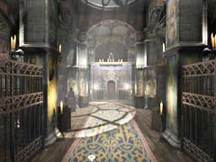
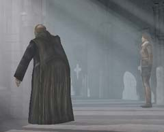
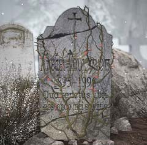

| 概要 | 地図 |
| 淡いヒント集 | ヒント集 | 的確なヒント集 |
| 攻略最短ルート |
| 場所選択に戻る |
修道院
|  壁に絵のある建物へ入り、奥へ移動 大修道士と会話 (全ての選択肢を選び、その後でてくる「白布」を選択) ムービー 大修道士との会話をすぐにうち切り、ハンスに会いに行く ハンスと話す (「ハンス」、「ミッション」、「修道院」を消えるまで選ぶ) (「アレクセイ」、「ミッション」、「ユコール族」を消えるまで選ぶ)  外へ出て、修道士と話す (「ハンス」、「アレクセイ」を選ぶ) 「巻物」、「マンモスのレンズ」入手 外へ出て「ブラシ」を入手 一輪車を調べ「枝きりバサミ」入手 十字架の床のある建物へ移動する 棒を手に取り、上の図のようにロウソクを下へおろす (白い丸が点火、黒い丸はそのまま)  建物の一番上へ移動し、シャッターに「マンモスのレンズ」をはめる 周囲の板を、下、左、上、右の順で押す (シャッターが少し閉まる) マンモスの目が映し出されている部分のオブジェクトをクリック (隠し部屋が出てくる) 隠し部屋に「極地日記」、「ユコール族の陶芸品」を入手  墓地へ移動し、植物の絡まった墓を調べる 植物に対して、「枝きりバサミ」を使う 下に落ちている「ベニイバラ」を入手 エレベーター近くの炉へ移動
| 次へ >> |
|
| 場所選択に戻る |
| 概要 | 地図 |
| 淡いヒント集 | ヒント集 | 的確なヒント集 |
| 攻略最短ルート |
Syberia II
| 目次へ戻る | ページの上部へ |